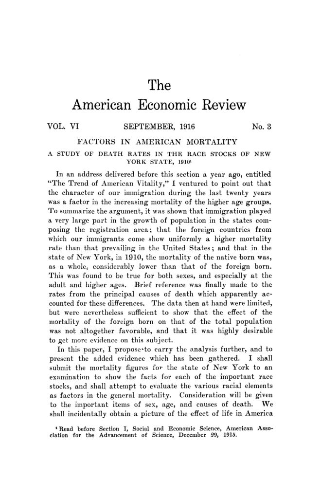

Setembro de 1916: o acordo do vidro, as concessionárias e o correio
Leitura: 14 min
Mortalidade padronizada por idade em Nova York, um acordo coletivo de quase 25 anos no vidro, a base de avaliação das concessionárias, a venda de comida pelo correio e uma letra de câmbio de 1559.


Mandar duas dúzias de ovos pelo correio, em 1916, custava 14 centavos antes de qualquer ovo ser pago: 5 pela caixa e 9 pelo porte. B. H. Hibbard e Asher Hobson fazem a conta para mostrar que a venda direta do sítio à cozinha, então anunciada como remédio contra o custo de vida, dificilmente sairia mais barata que o armazém da esquina.
O número de setembro de 1916 da American Economic Review traz cinco textos principais. Louis I. Dublin, da Metropolitan Life Insurance Company, compara taxas de mortalidade no estado de Nova York em 1910. Leo Wolman, da University of Michigan, descreve o acordo coletivo entre sopradores de garrafas e fabricantes. John Bauer, de Princeton, discute que valor deve servir de base ao retorno permitido às concessionárias de serviços públicos. Hibbard e Hobson examinam o correio e as transportadoras expressas como canais de venda de produtos agrícolas. E Alexander Marx apresenta e traduz a descrição das letras de câmbio escrita em 1559 por Jehiel Nissim da Pisa.
Fecham a edição as resenhas, a seção de documentos, o resumo de periódicos e as notas. O fio comum dos artigos é a mensuração: como comparar taxas de grupos com idades diferentes, como fixar um preço por peça que se mantenha quando chega a máquina, que custo usar para remunerar o capital e quanto do preço de um produto vai para embalagem e frete.
O que muda numa taxa de mortalidade quando se corrige a idade?
Louis I. Dublin (Metropolitan Life Insurance Company) · “Factors in American Mortality” · pp. 523–548
O texto foi lido em 29 de dezembro de 1915 na seção de ciência social e econômica da American Association for the Advancement of Science. A base é o estado de Nova York em 1910. A população branca é dividida em três classes: nativos de pais nativos, nativos de pais estrangeiros ou mistos e nascidos no exterior. Para estes, Dublin obteve do escritório do Census tabelas manuscritas com população e óbitos por país de nascimento, sexo e idade, o que permitiu calcular as taxas de seis grupos de origem.
O primeiro cuidado é com as idades em que não há imigrantes. Quase ninguém nasce no exterior e chega no primeiro ano de vida, a idade de maior mortalidade; por isso a taxa dos nascidos fora para menores de 10 anos é, na prática, a de 3 a 9 anos, e a taxa bruta de todas as idades sai artificialmente baixa. Dublin descarta essas faixas e compara a partir dos 10 anos.
O segundo cuidado é a padronização: recalcular cada taxa como se o grupo tivesse a distribuição etária dos nativos de pais nativos, tomada como padrão. O efeito pode ir nos dois sentidos. Para os homens nascidos na Rússia, a taxa bruta de 10 anos ou mais é de 7,7 por mil e a padronizada, de 13,1; para os nascidos na Alemanha, a bruta de 27,7 cai para 17,9. O padrão é 13,8 para homens e 12,4 para mulheres.
O terceiro passo decompõe as taxas por causa de morte, por 100 mil habitantes: tuberculose pulmonar, pneumonia, doenças do coração, doença de Bright, câncer e causas violentas. Como as taxas por causa dos nativos de pais nativos não estavam calculadas, a comparação é feita com o conjunto dos nativos. Dublin associa parte das diferenças em mortes violentas às ocupações mais perigosas e conclui que a tuberculose pulmonar e as doenças degenerativas explicam a maior parte das diferenças observadas, o que indica onde concentrar o trabalho dos departamentos de saúde do estado e das cidades.
“Um grande número de mortes desnecessárias seria prontamente evitado por um esforço conjunto mantido por vários anos.” (“A large number of unnecessary deaths would readily be prevented by a concerted effort”)
Como um acordo coletivo sobreviveu à máquina de fazer garrafas?
Leo Wolman (University of Michigan) · “Collective Bargaining in the Glass Bottle Industry” · pp. 549–567
Wolman reuniu o material como agente da Commission on Industrial Relations, a comissão federal sobre relações de trabalho. O objeto é o acordo entre a Glass Bottle Blowers' Association, o sindicato dos sopradores, e a National Glass Vial and Bottle Manufacturers' Association, que funcionava, de uma forma ou de outra, havia quase um quarto de século. O teste foi duro: a máquina semiautomática, a partir de meados da década de 1890, e a automática de Owens, depois de 1900, obrigaram a fixar tarifas que mantivessem o salário do soprador e deixassem o fabricante manual competir com a máquina.
O mecanismo tem três peças. Há duas conferências por ano: uma preliminar, em maio, onde cada lado apresenta suas propostas e se resolve o que tem pouca divergência, e uma final, em julho ou agosto, depois das convenções das duas entidades. Há quatro conjuntos de tarifas e regras, para o vidro de tanque feito à mão, para o de pote coberto e para dois tipos de máquina semiautomática. E há, desde 1902, por sugestão dos próprios fabricantes, um árbitro entre conferências: o presidente do sindicato, cujas decisões valem até serem revistas pela conferência conjunta.
Nas conferências, cada lado vota em bloco: uma medida só entra no acordo se agradar à maioria dos representantes de cada parte. Os representantes vão sem instruções fechadas, e as tentativas de amarrá-los, como a de 1906, foram rejeitadas. Nos impasses de 1905 e 1909, as fábricas ficaram paradas por um tempo e reabriram com as tarifas do ano anterior; a proposta de arbitragem por um juiz, feita em 1906, não prosperou. Wolman atribui a estabilidade ao caráter nacional do acordo, à força do sindicato e ao fato de que as tarifas uniformes eliminam desigualdades entre fabricantes. Lembra ainda que o sindicato aceitou reduções substanciais de tarifas em três ocasiões.
Sobre que valor uma concessionária deve ser remunerada?
John Bauer (Princeton University) · “Bases of Valuation in the Control of Return on Public Utility Investments” · pp. 568–588
Quando o Estado limita o lucro de uma empresa de gás, eletricidade ou bondes, precisa definir sobre que base calcular o retorno permitido. Bauer diz que a discussão está confusa porque mistura conceitos diferentes de custo efetivo e de custo de reprodução. Propõe que o legislador escolha uma única base, aplicada a todos os casos, julgada por cinco critérios: ser clara, simples, não romper violentamente com o direito vigente, respeitar o que os investidores razoavelmente esperavam e não sacrificar o bem-estar geral em nome de reivindicações individuais.
Os conceitos se dividem em dois grupos. Os de sacrifício do investidor olham a história: o dinheiro entrado pela emissão de títulos, esse valor mais os lucros reinvestidos e, por fim, um sacrifício líquido total corrigido pelos retornos passados acima ou abaixo do justo. Os de avaliação olham a propriedade existente: custo de reprodução a preços atuais, bruto ou líquido de depreciação, e custo de instalação aos preços pagos na época, também bruto ou líquido. Valor de mercado dos títulos e valor como empresa em funcionamento ficam de fora, porque capitalizariam contra o público as tarifas de monopólio já cobradas.
O padrão mais justo seria o sacrifício direto, capital mais lucros reinvestidos, mas exigiria reconstruir a contabilidade de cada empresa desde a fundação, o que muitas vezes seria inventar. A reprodução a preços atuais daria aos investidores ganhos que eles não esperavam, sobretudo nas ferrovias, cujas faixas de domínio foram doadas ou compradas a preço de terra agrícola. A conclusão é o custo de instalação líquido de depreciação, a aproximação prática mais próxima do sacrifício direto, com a mesma regra de depreciação para todas as empresas, qualquer que tenha sido sua história contábil.
“A administração prática exige regras claras, simples e uniformes.” (“Practical administration demands clear, simple, and uniform rules.”)
Vender do sítio direto ao consumidor pelo correio barateia a comida?
B. H. Hibbard e Asher Hobson · “Marketing Farm Produce by Parcel Post and Express” · pp. 589–608
O ponto de partida é o lema contra o intermediário, popular como resposta ao custo de vida. O departamento de economia agrícola da University of Wisconsin consultou mais de 200 agricultores do estado que, meses antes, tinham anunciado disposição de vender direto ao consumidor distante. Só 62 haviam feito remessas, e alguns logo desistiram. Os consumidores que compraram assim também se mostraram insatisfeitos, sobretudo com os preços.
O motivo está na estrutura de custos. O porte mínimo é de 5 centavos pela primeira libra, o que exige produtos de alto valor por peso e oferta regular; aves e laticínios são os que melhor se encaixam. Segundo a tabela dos autores, só cerca de um onze avos do valor das lavouras poderia, em tese, ser vendido por esses canais, e uma parte pequena disso o será de fato. Os autores acrescentam a qualidade, a embalagem, a localização a uma distância de até 200 milhas e o hábito doméstico de comprar pouco e com frequência, pelo telefone.
A comparação entre o correio e as transportadoras expressas mostra o efeito da concorrência. O limite de peso postal subiu para 50 libras em 1º de janeiro de 1914; as expressas baixaram tarifas em 1º de fevereiro de 1914 e as revisaram em parte para cima em 1º de setembro de 1915. A 50 milhas, o correio é mais barato até 24 libras; a 100 milhas, até 28; a 200 milhas, só até 13. Os autores observam que as reduções das expressas se concentraram onde havia concorrência postal, e concluem que a venda direta tem lugar por causa do frescor, e não do preço.
“Contribuirá para o custo da vida elevada.” (“it will contribute to the cost of high living.”)
Como funcionava uma letra de câmbio em 1559?
Alexander Marx (apresentação e tradução) · “A Description of Bills of Exchange, 1559” · pp. 609–614
Em 1559, Jehiel Nissim da Pisa, de uma antiga família de banqueiros e ele próprio banqueiro, escreveu um compêndio das leis judaicas sobre a usura, intitulado Hayye Olam. A obra nunca foi publicada. Alexander Marx traduz livremente o capítulo 15, sobre letras de câmbio, a partir de uma cópia manuscrita feita em Bolonha e adquirida pela biblioteca do Jewish Theological Seminary of America, em Nova York; há outras cópias em Parma e em São Petersburgo.
O autor distingue três formas. Na letra simples, A, em Florença, entrega 100 escudos a um banqueiro e recebe uma ordem de pagamento sobre o sócio deste em Veneza, pagando 2% ou 3%; é permitida, porque remunera o transporte evitado, e não um empréstimo. Na letra real, o comerciante que vendeu a prazo e precisa de dinheiro toma marcos de ouro na sua cidade e se compromete a pagá-los em Lyon na feira seguinte. Há quatro feiras por ano, a cada três meses, e Lyon é o centro de tudo.
Quando há muita procura por ouro, a cotação nas praças cai e quem toma marcos perde mais; quando o mercado está folgado, a diferença encolhe e, muito raramente, vira ganho. O texto registra especuladores que compram o ouro disponível antes de uma alta e a divisão dos teólogos cristãos sobre a licitude do arranjo, defendida pelo risco de perda. A terceira forma, o câmbio seco, é o empréstimo com garantia a quem não tem correspondente em Lyon. O autor menciona ainda os grandes empréstimos de genoveses a Carlos V e os débitos deixados por Filipe II e por Francisco I.
Para os seus leitores, o rabino proíbe a compra do marco, porque trata o dinheiro como fruto: receber em três meses um marco que vale 65 por um tomado a 61 seria o tipo de usura vedada. Termina com o seguro marítimo, permitido por ser preço de risco, e não empréstimo: prêmios de 7% de Livorno a Nápoles, 8% a Messina ou Palermo e 12% a Alexandria, com litígios regidos pelo Consulado de Barcelona.
O que mais há na edição?
As resenhas, organizadas por área, incluem A Study of Industrial Fluctuation, de Dennis Holme Robertson, por Wesley C. Mitchell; Transportation Rates and Their Regulation, de Harry Gunnison Brown, por Maxwell Ferguson; The Marketing of Farm Products, de L. D. H. Weld, por William R. Camp; Principles of Labor Legislation, de John R. Commons e John B. Andrews, por George E. Barnett; dois livros sobre a Federal Trade Commission, por W. H. S. Stevens; English Taxation 1640–1799, de William Kennedy, por Benjamin Terry; e British Incomes and Property, de J. C. Stamp, por Roy G. Blakey. Os documentos tratam da lei de cooperativas de crédito rural da Carolina do Norte e da ampliação do canal de Welland. As notas anunciam, para dezembro, um artigo de George E. Putnam sobre o projeto federal de crédito rural e uma réplica de Seligman a Adams sobre isenção tributária e capitalização do imposto.
Na minha leitura
Na minha leitura, a edição é uma sequência de lições sobre o denominador. Dublin mostra que uma taxa bruta de mortalidade pode inverter sua mensagem quando se corrige a composição etária; Bauer mostra que o retorno justo de uma concessionária depende inteiramente da base escolhida, e que escolher a base caso a caso paralisa o regulador; Hibbard e Hobson mostram que, para produtos de baixo valor por libra, embalagem e porte pesam mais que o intermediário que se queria eliminar.
Wolman e o texto de 1559 tratam do mesmo problema por outro lado: como instituições privadas criam regras estáveis de preço. O acordo do vidro fixa tarifas por peça e um árbitro para os casos novos; as feiras de Lyon fixam um valor de referência para o marco e deixam o custo do dinheiro aparecer na cotação das praças. Nos dois casos, a regra clara vem antes da negociação, e é ela que torna a negociação possível.
Glossário
- Taxa padronizada por idade
- taxa recalculada como se o grupo tivesse a mesma distribuição etária de uma população de referência.
- Negociação coletiva
- fixação de salários e condições de trabalho por acordo entre sindicato e empregadores.
- Base de avaliação (rate base)
- valor sobre o qual se calcula o retorno permitido a uma concessionária regulada.
- Custo de instalação líquido
- valor da propriedade existente aos preços pagos na aquisição, menos a depreciação acumulada.
- Parcel post
- serviço de encomendas do correio americano, criado para pacotes que antes só as transportadoras expressas levavam.
- Transportadora expressa (express company)
- empresa privada que levava pacotes e valores pelas ferrovias, com manuseio individual.
- Letra de câmbio
- ordem escrita para que um correspondente pague uma quantia em outra praça, em data futura.
- Câmbio seco
- empréstimo disfarçado de operação de câmbio, sem remessa real de dinheiro entre praças.
Artigos (5)
- Factors in American Mortality — Louis I. Dublin (Metropolitan Life Insurance Company) (pp. 523–548) · resenha acima · JSTOR
- Collective Bargaining in the Glass Bottle Industry — Leo Wolman (University of Michigan) (pp. 549–567) · resenha acima · comentário completo · JSTOR
- Bases of Valuation in the Control of Return on Public Utility Investments — John Bauer (Princeton University) (pp. 568–588) · resenha acima · comentário completo · JSTOR
- Marketing Farm Produce by Parcel Post and Express — B. H. Hibbard e Asher Hobson (pp. 589–608) · resenha acima · JSTOR
- A Description of Bills of Exchange, 1559 — Alexander Marx (apresentação e tradução) (pp. 609–614) · resenha acima · JSTOR
Resenhas (24)
- Edward Cary Hayes, Introduction to the Study of Sociology — F. H. Hankins (pp. 615–618). Manual elementar de sociologia para o leitor geral e o estudante universitário. JSTOR
- Joseph Wickham Roe, English and American Tool Builders — Clive Day (pp. 618–619). História dos construtores de máquinas-ferramenta na Inglaterra e nos Estados Unidos. JSTOR
- Ray Palmer Teele, Irrigation in the United States — F. H. Newell (pp. 623–626). Aspectos jurídicos, econômicos e financeiros da irrigação nos Estados Unidos. JSTOR
- Paul N. Nystrom, Textiles — W. A. Graham Clark (pp. 626–628). Tratado popular sobre produção e distribuição de algodão, linho, lã, mohair e seda. JSTOR
- Thomas Latimer Kibler, The Commodities Clause — Eliot Jones (pp. 628–630). Origem e aplicação da cláusula das mercadorias às ferrovias interestaduais ligadas ao carvão. JSTOR
- Mark Wymond, Railroad Valuation and Rates — Hammond V. Hayes (pp. 630–631). Livro sobre avaliação de ferrovias e tarifas. JSTOR
- Harry Gunnison Brown, Transportation Rates and Their Regulation — Maxwell Ferguson (pp. 632–633). Teoria das tarifas de transporte e de sua regulação, escrita do ponto de vista do economista. JSTOR
- Emory R. Johnson e outros, History of Domestic and Foreign Commerce of the United States — Clive Day (pp. 635–637). História do comércio interno e externo dos Estados Unidos, em dois volumes. JSTOR
- Dennis Holme Robertson, A Study of Industrial Fluctuation — Wesley C. Mitchell (pp. 638–639). Investigação sobre o caráter e as causas dos movimentos cíclicos do comércio. JSTOR
- L. D. H. Weld, The Marketing of Farm Products — William R. Camp (pp. 640–643). Descrição das funções dos agentes que distribuem produtos agrícolas. JSTOR
- John Raymond Wildman, Principles of Auditing — William Morse Cole (pp. 644–647). Manual de princípios de auditoria. JSTOR
- Henry Floy, Value for Rate-Making — Hammond V. Hayes (pp. 647–649). Livro sobre valor e depreciação na fixação de tarifas de serviços públicos. JSTOR
- Frederick S. Todman, Brokerage Accounts — S. S. Huebner (pp. 649–650). Livros e registros contábeis da corretagem de ações, algodão e produtos. JSTOR
- John Maynard Harlan e Lewis W. McCandless, The Federal Trade Commission; Richard S. Harvey e Ernest W. Bradford, A Manual of the Federal Trade Commission — W. H. S. Stevens (pp. 651–653). Dois livros sobre os poderes da Federal Trade Commission. JSTOR
- John R. Commons e John B. Andrews, Principles of Labor Legislation — George E. Barnett (pp. 654–658). Tratado sobre os princípios da legislação trabalhista. JSTOR
- Carl H. Mote, Industrial Arbitration — John Graham Brooks (pp. 658–662). Panorama mundial das agências de arbitragem e conciliação do trabalho. JSTOR
- Summary of the Report on Condition of Woman and Child Wage Earners in the United States — Edith Abbott (pp. 662–664). Resumo do inquérito federal sobre o trabalho de mulheres e crianças. JSTOR
- Julius Henry Cohen, Law and Order in Industry — N. I. Stone (pp. 664–667). Proposta de um advogado para regular por lei os acordos coletivos de uma indústria. JSTOR
- Charles B. Barnes, The Longshoremen — William O. Weyforth (pp. 667–669). Estudo da Russell Sage Foundation sobre os estivadores. JSTOR
- H. Parker Willis, American Banking; The Federal Reserve — G. W. Dowrie (pp. 670–672). Dois livros de Willis sobre o sistema bancário americano e o Federal Reserve. JSTOR
- William Kennedy, English Taxation 1640–1799 — Benjamin Terry (pp. 674–675). Ensaio sobre política e opinião na tributação inglesa. JSTOR
- J. C. Stamp, British Incomes and Property — Roy G. Blakey (pp. 675–677). Aplicação das estatísticas oficiais britânicas de renda e propriedade a problemas econômicos. JSTOR
- Fritz Mender, Das moderne Zollschutzsystem — Simon Litman (pp. 677–679). Revisão da controvérsia alemã sobre o protecionismo desde a década de 1870. JSTOR
- Mabel Louise Nassau, Old Age Poverty in Greenwich Village — Frank D. Watson (pp. 686–687). Descrição de cem pessoas com mais de sessenta anos perto da linha de pobreza em Nova York. JSTOR
Novos livros (15)
- New Books (pp. 619–623). Lista de livros novos: história econômica e geografia, agricultura. JSTOR
- New Books (pp. 626). Lista de livros novos: agricultura, mineração, florestas e pesca. JSTOR
- New Books (pp. 628). Lista de livros novos: indústrias de transformação. JSTOR
- New Books (pp. 633–635). Lista de livros novos: transporte e comunicações. JSTOR
- New Books (pp. 643–644). Lista de livros novos: comércio e crises comerciais. JSTOR
- New Books (pp. 650). Lista de livros novos: contabilidade, métodos comerciais e investimentos. JSTOR
- New Books (pp. 653–654). Lista de livros novos: capital e organização capitalista. JSTOR
- New Books (pp. 669–670). Lista de livros novos: trabalho e organizações de trabalhadores. JSTOR
- New Books (pp. 673–674). Lista de livros novos: moeda, preços, crédito e bancos. JSTOR
- New Books (pp. 679–682). Lista de livros novos: finanças públicas, tributação e tarifas. JSTOR
- New Books (pp. 682). Lista de livros novos: finanças públicas e tarifas (continuação). JSTOR
- New Books (pp. 682–685). Lista de livros novos: população, migração e problemas sociais. JSTOR
- New Books (pp. 685–686). Lista de livros novos: seguros e pensões. JSTOR
- New Books (pp. 687–688). Lista de livros novos: pauperismo e assistência. JSTOR
- New Books (pp. 688). Lista de livros novos: socialismo e cooperativas. JSTOR
Documentos, periódicos e notas (3)
- Documents, Reports, and Legislation — William R. Camp e outros (pp. 689–703). A lei de cooperativas de crédito rural da Carolina do Norte, a ampliação do canal de Welland e relatórios oficiais. JSTOR
- Periodicals (pp. 704–731). Resumos de artigos de revistas, organizados por área. JSTOR
- Notes (pp. 732–738). Artigos anunciados para dezembro e a convenção da National Association of Corporation Schools em Pittsburgh. JSTOR
Fontes
- Factors in American Mortality (pp. 523–548). JSTOR · Internet Archive (PDF)
- Collective Bargaining in the Glass Bottle Industry (pp. 549–567). JSTOR · Internet Archive (PDF)
- Bases of Valuation in the Control of Return on Public Utility Investments (pp. 568–588). JSTOR · Internet Archive (PDF)
- Marketing Farm Produce by Parcel Post and Express (pp. 589–608). JSTOR · Internet Archive (PDF)
- A Description of Bills of Exchange, 1559 (pp. 609–614). JSTOR · Internet Archive (PDF)
- [untitled] The American Economic Review, (1916-09-01), pages 615-618 (pp. 615–618). JSTOR · Internet Archive (PDF)
- [untitled] The American Economic Review, (1916-09-01), pages 618-619 (pp. 618–619). JSTOR · Internet Archive (PDF)
- New Books (pp. 619–623). JSTOR · Internet Archive (PDF)
- [untitled] The American Economic Review, (1916-09-01), pages 623-626 (pp. 623–626). JSTOR · Internet Archive (PDF)
- New Books (pp. 626). JSTOR · Internet Archive (PDF)
- [untitled] The American Economic Review, (1916-09-01), pages 626-628 (pp. 626–628). JSTOR · Internet Archive (PDF)
- New Books (pp. 628). JSTOR · Internet Archive (PDF)
- [untitled] The American Economic Review, (1916-09-01), pages 628-630 (pp. 628–630). JSTOR · Internet Archive (PDF)
- [untitled] The American Economic Review, (1916-09-01), pages 630-631 (pp. 630–631). JSTOR · Internet Archive (PDF)
- [untitled] The American Economic Review, (1916-09-01), pages 632-633 (pp. 632–633). JSTOR · Internet Archive (PDF)
- New Books (pp. 633–635). JSTOR · Internet Archive (PDF)
- [untitled] The American Economic Review, (1916-09-01), pages 635-637 (pp. 635–637). JSTOR · Internet Archive (PDF)
- [untitled] The American Economic Review, (1916-09-01), pages 638-639 (pp. 638–639). JSTOR · Internet Archive (PDF)
- [untitled] The American Economic Review, (1916-09-01), pages 640-643 (pp. 640–643). JSTOR · Internet Archive (PDF)
- New Books (pp. 643–644). JSTOR · Internet Archive (PDF)
- [untitled] The American Economic Review, (1916-09-01), pages 644-647 (pp. 644–647). JSTOR · Internet Archive (PDF)
- [untitled] The American Economic Review, (1916-09-01), pages 647-649 (pp. 647–649). JSTOR · Internet Archive (PDF)
- [untitled] The American Economic Review, (1916-09-01), pages 649-650 (pp. 649–650). JSTOR · Internet Archive (PDF)
- New Books (pp. 650). JSTOR · Internet Archive (PDF)
- [untitled] The American Economic Review, (1916-09-01), pages 651-653 (pp. 651–653). JSTOR · Internet Archive (PDF)
- New Books (pp. 653–654). JSTOR · Internet Archive (PDF)
- [untitled] The American Economic Review, (1916-09-01), pages 654-658 (pp. 654–658). JSTOR · Internet Archive (PDF)
- [untitled] The American Economic Review, (1916-09-01), pages 658-662 (pp. 658–662). JSTOR · Internet Archive (PDF)
- [untitled] The American Economic Review, (1916-09-01), pages 662-664 (pp. 662–664). JSTOR · Internet Archive (PDF)
- [untitled] The American Economic Review, (1916-09-01), pages 664-667 (pp. 664–667). JSTOR · Internet Archive (PDF)
- [untitled] The American Economic Review, (1916-09-01), pages 667-669 (pp. 667–669). JSTOR · Internet Archive (PDF)
- New Books (pp. 669–670). JSTOR · Internet Archive (PDF)
- [untitled] The American Economic Review, (1916-09-01), pages 670-672 (pp. 670–672). JSTOR · Internet Archive (PDF)
- New Books (pp. 673–674). JSTOR · Internet Archive (PDF)
- [untitled] The American Economic Review, (1916-09-01), pages 674-675 (pp. 674–675). JSTOR · Internet Archive (PDF)
- [untitled] The American Economic Review, (1916-09-01), pages 675-677 (pp. 675–677). JSTOR · Internet Archive (PDF)
- [untitled] The American Economic Review, (1916-09-01), pages 677-679 (pp. 677–679). JSTOR · Internet Archive (PDF)
- New Books (pp. 679–682). JSTOR · Internet Archive (PDF)
- New Books (pp. 682). JSTOR · Internet Archive (PDF)
- New Books (pp. 682–685). JSTOR · Internet Archive (PDF)
- New Books (pp. 685–686). JSTOR · Internet Archive (PDF)
- [untitled] The American Economic Review, (1916-09-01), pages 686-687 (pp. 686–687). JSTOR · Internet Archive (PDF)
- New Books (pp. 687–688). JSTOR · Internet Archive (PDF)
- New Books (pp. 688). JSTOR · Internet Archive (PDF)
- Documents, Reports, and Legislation (pp. 689–703). JSTOR · Internet Archive (PDF)
- Periodicals (pp. 704–731). JSTOR · Internet Archive (PDF)
- Notes (pp. 732–738). JSTOR · Internet Archive (PDF)
- Sumário da edição no JSTOR: The American Economic Review, vol. 6, nº 3.
Documento em domínio público (EUA, publicado antes de 1931), via JSTOR Early Journal Content e Internet Archive. Resumo e comentário do autor deste site, sem afiliação com a American Economic Association. Encontrou um erro? Escreva: a correção é publicada no próprio texto, com data.
← Nº 142 · Manual de 1916: a associação marca encontro em Columbus